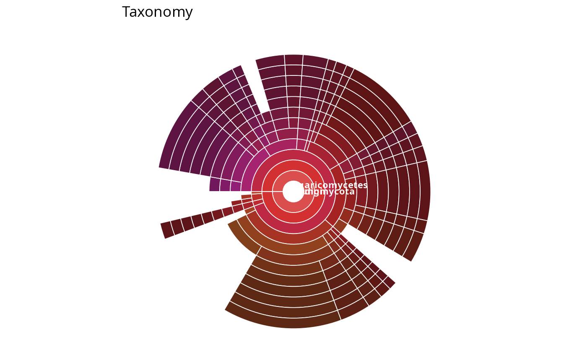
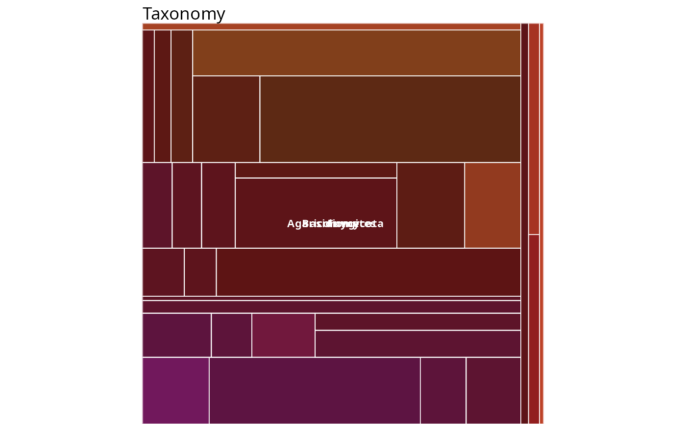
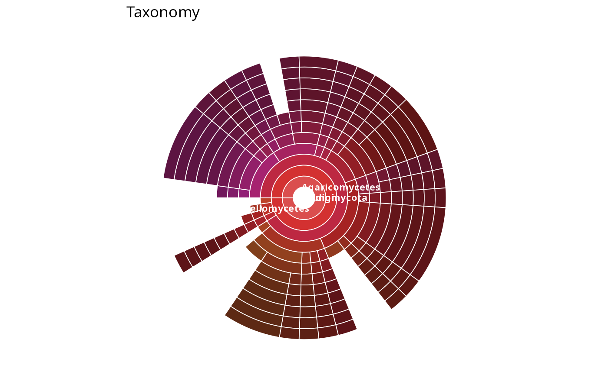
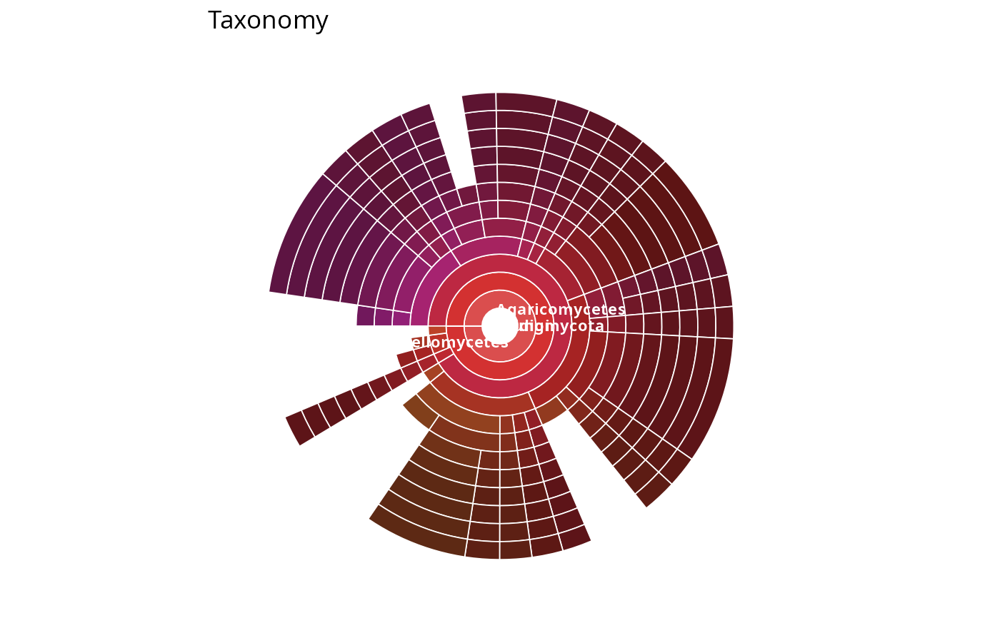
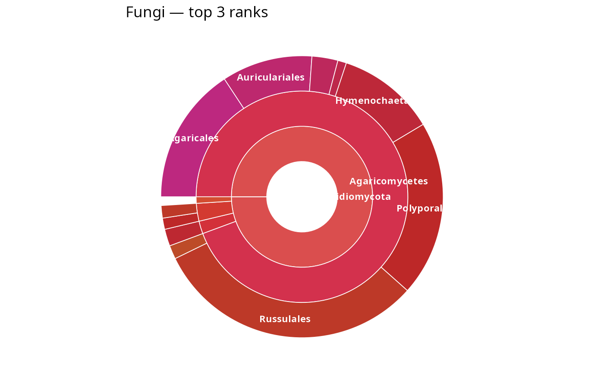

Krona-like interactive taxonomy plot from a phyloseq object
Source:R/krona_like_pq.R
krona_like_pq.Rd
Build a Krona-style interactive taxonomy
explorer from a phyloseq::phyloseq object, without needing
KronaTools installed. The interactive version (default) is a D3.js
htmlwidget that renders in the RStudio viewer, in Shiny, and in R
Markdown documents, and can be saved as a self-contained .html file via
file_path. A static ggplot2 version is also available
(interactive = FALSE) for publication-ready output.
Two layouts are supported:
"sunburst"(default): concentric rings, one per taxonomic rank; the angle of each wedge is proportional to its value. This is the Krona pie. Click a wedge to zoom into that subtree (Krona's signature interaction)."treemap": nested rectangles; the area of each rectangle is proportional to its value. Click a cell to zoom in.
Colours follow the Krona convention: each distinct value at the
color_by rank receives its own hue, and descendants inherit the parent
hue with a progressive lightness shift (darker as you go deeper).
This function is a drop-in alternative to MiscMetabar::krona(), which
shells out to KronaTools and does not work on Windows. krona_like_pq()
works on all platforms because it bundles D3.js locally.
Usage
krona_like_pq(
physeq,
ranks = "All",
weight_by = "sequences",
add_unassigned_rank = 0,
layout = c("sunburst", "treemap"),
interactive = TRUE,
title = NULL,
color_by = NULL,
file_path = NULL,
width = NULL,
height = NULL
)Arguments
- physeq
(required) A phyloseq::phyloseq object.
- ranks
(character or integer, default
"All") Taxonomic ranks to use."All"selects every column oftax_table(physeq); an integer vector selects columns by position; a character vector selects columns by name (must all be present inphyloseq::rank_names()).- weight_by
Weight applied to each taxon when computing wedge/rectangle sizes. One of:
"sequences"(default): the total read count per taxon (phyloseq::taxa_sums())."asv": each taxon counts as 1 (distribution of ASVs/OTUs).a function: applied to the per-taxon read counts (e.g.
log1p,sqrt); negative/NA results are clamped to 0 with a warning.a numeric vector of length
phyloseq::ntaxa(), aligned tophyloseq::taxa_names(); negative/NA entries are clamped to 0.
- add_unassigned_rank
(integer, default 0) Controls how taxa with missing (
NAor empty) taxonomic labels are handled. When0(default),NAvalues are relabelled"unassigned"at every rank and become a leaf at the rank where they first occur. When> 0, this relabelling only happens for the firstadd_unassigned_rankranks (1-based, among the selectedranks); beyond that depth, taxa withNAat a rank are dropped.- layout
(character, default
"sunburst") One of"sunburst"(angle = value, Krona pie) or"treemap"(area = value).- interactive
(logical, default
TRUE) IfTRUE, returns a D3.jshtmlwidget(requires the htmlwidgets package). IfFALSE, returns a static ggplot2::ggplot object with no extra dependency.- title
(character, default
NULL) Chart title. WhenNULL, defaults to"Taxonomy".- color_by
(character, default
NULL) Name of the rank whose distinct values receive distinct hues. Descendants inherit the parent hue with a lightness shift. WhenNULL, defaults to the first selected rank (the outermost ring) — the classic Krona look.- file_path
(character, default
NULL) Wheninteractive = TRUEand this is set, the widget is also saved as a self-contained.htmlfile viahtmlwidgets::saveWidget(). The widget is then returned invisibly. Ignored wheninteractive = FALSE.- width,
height (numeric, default
NULL) Widget dimensions in pixels. WhenNULL, the widget fills its container (RStudio viewer / Shiny). Ignored wheninteractive = FALSE.
Value
When interactive = TRUE, an htmlwidget object (invisibly if
file_path is set). When interactive = FALSE, a ggplot2::ggplot
object.
See also
MiscMetabar::krona() for the legacy KronaTools wrapper (does
not work on Windows); https://github.com/marbl/Krona for the
original Krona project.
Examples
# \donttest{
data(data_fungi_mini, package = "MiscMetabar")
# Static sunburst (no extra dependency needed)
krona_like_pq(data_fungi_mini, interactive = FALSE)

# Static treemap
krona_like_pq(data_fungi_mini, layout = "treemap", interactive = FALSE)

# Weight by ASV count instead of read count
krona_like_pq(data_fungi_mini, weight_by = "asv", interactive = FALSE)

# Weight by a transformation of read counts
krona_like_pq(data_fungi_mini, weight_by = log1p, interactive = FALSE)

# Subset of ranks and a custom title
krona_like_pq(
data_fungi_mini,
ranks = c("Phylum", "Class", "Order"),
title = "Fungi — top 3 ranks",
interactive = FALSE
)

# }
if (FALSE) { # \dontrun{
# Interactive D3 widget (requires the htmlwidgets package)
krona_like_pq(data_fungi_mini)
# Save a self-contained HTML file to share
krona_like_pq(data_fungi_mini, file_path = "krona_fungi.html")
# Interactive treemap
krona_like_pq(data_fungi_mini, layout = "treemap")
} # }